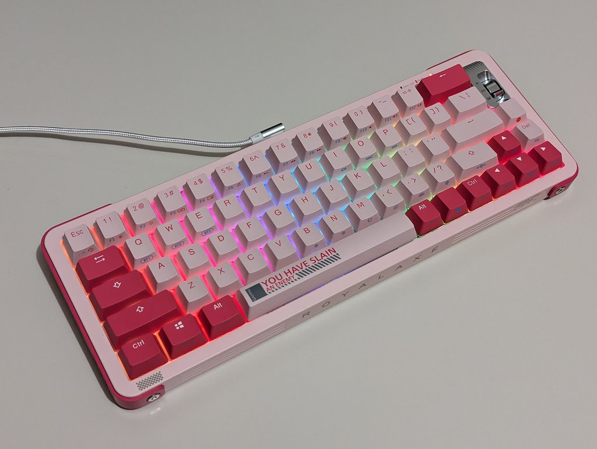
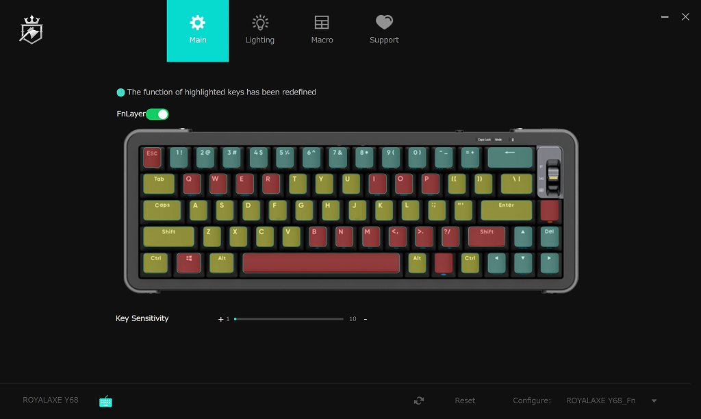

Royalaxe Y68
概要
キーボード Royalaxe Y68 を購入したおぼえがき。
仕様

- 65%サイズ
- 質量1㎏弱
- TTC金粉軸
- 有線・専用無線・BT（クラシック、BLE）対応、バッテリ内蔵
- RGBLED搭載
- キーリマップ対応
全部入りの仕様でありながら、$45@米尼で叩き売られるくらい終売の気配がするキーボードになります。私にとっては3枚目のTTC金粉軸キーボードです。
ハードウェア
同じ軸を搭載したキーボードであってもガワや吸音フォームで打鍵感や打鍵音が異なるのですが、本キーボードはフォームのおかげか落ち着いた音がしていて、特にスペースバーを押したときのコトコト音にはこだわりを感じます。同じTTC金粉軸の Ducky One 2 Mini と比べると本キーボードは以下のような差がありました。正直なところ Ducky よりも好みで、このキーボードが1万円しないで買えるのは本当に安いと思います。
- 打鍵音が低い
- ストロークが浅い
- キーの戻りが遅い
- ガワが一回り大きい
- 高さが高い
なお Royalaxe R68 というガワが薄いモデルもあります。ただしバックスペースキーのサイズが半分だったり、傾き調整できなかったり、吸音フォームが Y68 よりも少なかったりします。
ソフトウェア
ソフトウェアのダウンロード先が EPOMAKER, YUNZII, www.royalaxe.cn の3か所ありますが本家の最新版(現在 260.2.78)を使用して以下を確認しました。
キーリマップ
- PrintScreen キーがデフォルトで存在しないのでリマップしないと使えない
- キーコードを指定することは不可能、指定されたキー・機能(マウス機能含む)から選択
- AppData\Roaming\ROYALAXE Driver 以下にあるファイル修正したらできないかと思って調べてみたけどバイナリだったので面倒になって止めた
- Fn キーのリマップには非対応
- Fnキーに機能を割り当てることはできない
- リマップ可能キーに Fn キーの機能を割り当てることもできない
- リマップ可能キーの無効化は可能
- 本キーボードにはFnキーが2つあるがソフトウェアの Fn レイヤーは1つ
- 最上段の 1 キーから = キーまでの設定は Fn(オレンジ) キーに対応
- 上記以外は Fn(ブルー) キーに対応
- 通常レイヤーのリマップ不可能キーは2つの Fn キーのみ
- Fnレイヤーはリマップ不可能キーが多い(下図の赤色が Fn レイヤーのリマップ不可能キー)

私はとりあえず以下のように設定しました
- CapsLock: 無効
- 右Ctrl: Alt + ` (IME切替)
- 右Shift: PrintScreen
- Fn + Backspace: Delete
ライティング
固定色・マルチカラーを選択したり、固定パターンだけでなく押したら反応・再生音連動なども含めて点灯パターンを選択したり、輝度調整・速度調整が可能です。なお LED の ON/OFF はソフトウェア不要で Fn + 右Shift に対応しています。
マクロ
操作を記録してマクロとして登録できるよくある機能。Fn レイヤーのキーに割り当てて使うのが良いのかも。
まとめ
1ドル150円時代に1万円しないで買えるキーボードとしては超優秀。というかこれ以上を求めると自作キーボードの世界。